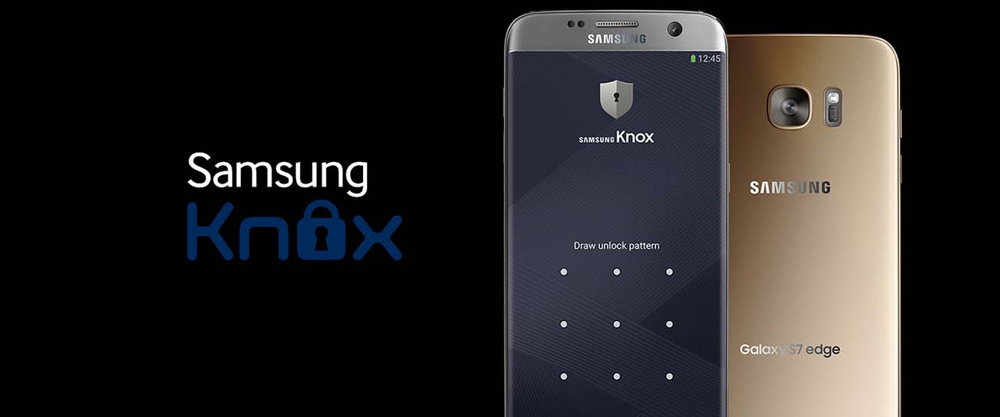
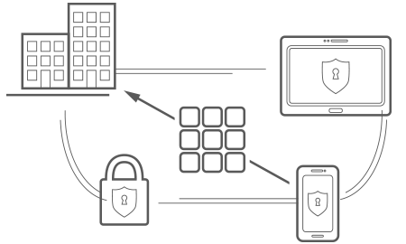
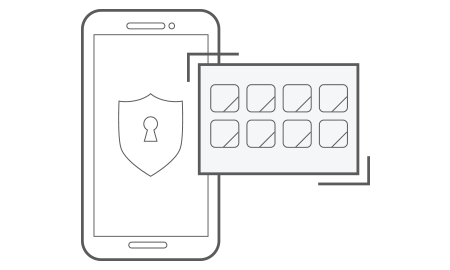

Secure
Samsung Knox protects both device hardware and software to give you comprehensive security for your mobilized workforce.

Customize
Create custom device software solutions to meet any industry needs or requirements.
Manage
Mobile management made easy, with both cloud and on-premise-based solutions. Knox supports the most popular MDM, EMM, SSO and VPN solutions.
Chipset Security
Samsung manufactures and configures its devices in its own factories, and has designed them so that all critical security mechanisms are anchored from the device chipset.
Integrity Monitoring
Booting components are always tested for integrity, while Run Time Protection blocks any code changes to the kernel, and ensures the integrity of the data in system partition.
Warranty Bit
If hacking or rooting is detected on the device, our one-time e-fuse blows, disallowing any user access and securing all data. Attestation allows IT admins to remotely check if a device is trustworthy.
-

Knox Workspace
Knox Workspace is an on-device container that isolates business applications and data from personal ones with government-grade security. Knox Workspace also provides enhanced granular controls over device features to enterprise IT administrators. Manage the container by integrating Knox IT policies with your existing MDM solution.Knox Premium
Knox Premium is a cloud-based cross-platform enterprise mobility management solution combined with an on-device secure container for Samsung devices-
